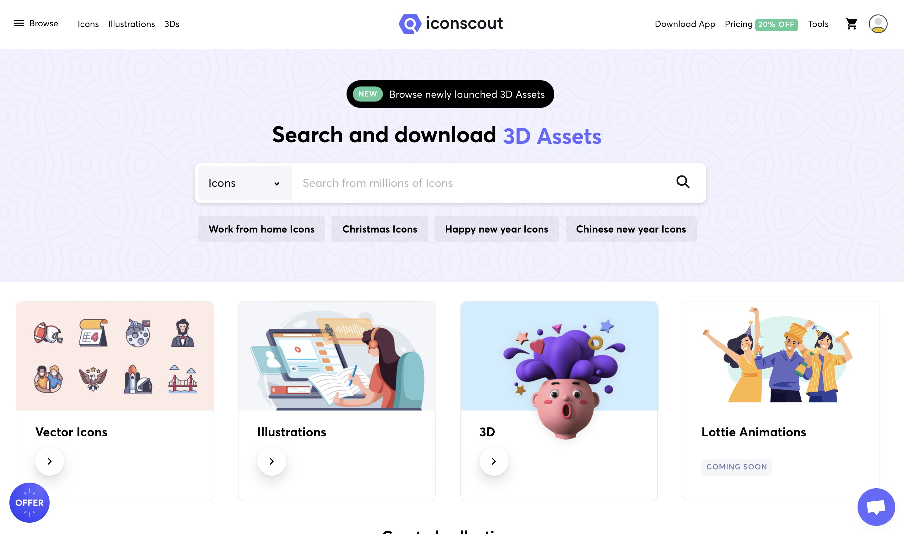
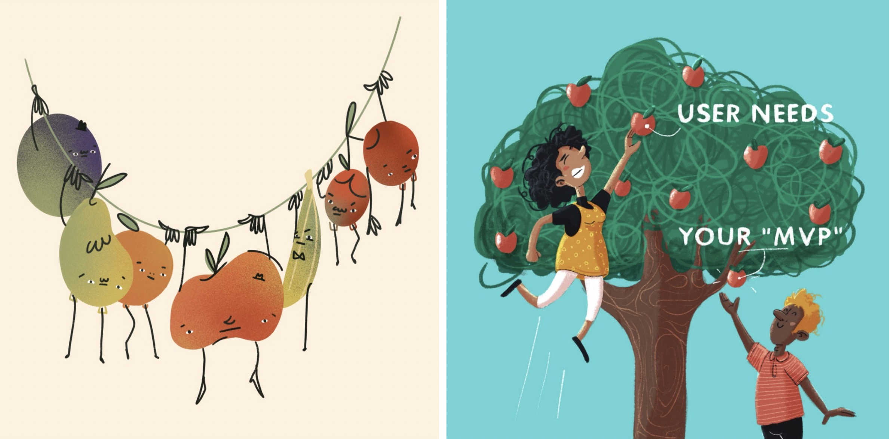

设计周刊 Design Weekly #41
📕 设计资源
Shards UI Kit
https://designrevision.com/downloads/shards
一个基于Bootstrap 4的免费的现代UI工具包。
buildformars-UX案例研究的集合
网站目标是通过各种用户体验案例的学习，帮助世界建立更好的用户体验。
“即使是世界上最好的公司也会犯错”
Iconscout-设计资源在线编辑工具
Iconscout 一个设计资源平台，可以通过创新工具（如插件和应用程序），为个人和企业提供创意资源，包含插画、3D等设计素材，近期上线了一个图标编辑器的功能。

📗 设计文章
Figma 社区游玩指南
文如题名，手把手教你使用 Figma 的社区资源，这里有来自全球知名设计师或公司设计资源（微软、Salesfocrce、Spotify、Slack .etc），站在巨人的肩膀上学习，让设计变得触手可及。
2020年Web/移动端主要UI设计趋势大回顾
https://blog.tubikstudio.com/major-ui-design-trends
让我们来回顾一下2020年网站和移动应用的UI/UX设计流行什么吧，包括了大量的UI设计案例哦~
📙 设计灵感
31 个英语习惯用语的插画解读
https://medium.muz.li/31-english-idioms-illustrated-by-2-non-native-speakers-92af6a45cda6
Instagram上世界各地的人们都参加了#inktober 挑战赛，2 位非英语母语的设计师业余时间绘制的以英语习惯用语为主题创作的插画，在日常使用的基础上，通过不同的插画形式挖掘这些词汇更深层次的理解。

📙 设计案例
Bukalapak的品牌和设计语言
https://buditanrim.co/bukalapak-design-language
Bukalapak成立于2011年，坐落于印度尼西亚雅加达市，专注于电子商务领域。作者 Budi Tanrim 在 Bukalapak 领导一个90多人的设计团队，本次项目就是作者带领下对 Bukalapak 的品牌和设计语言升级。作者曾以自由工作者身份与Shopify、Wealthsimple、Zerply 等合作，个人网站记录了他参与的各种项目，感兴趣可以移步这里 。
全新的起亚品牌形象
https://www.black.space/kia-rising-2021
Blackspace工作室对他们在全新起亚品牌形象设计上的见解。
“全新的起亚标志是品牌形象的高度集中的视觉表达。通过鲜明无误的全新设计，反映了品牌不断发展的态度。起亚是年轻而敏捷的挑战者。”